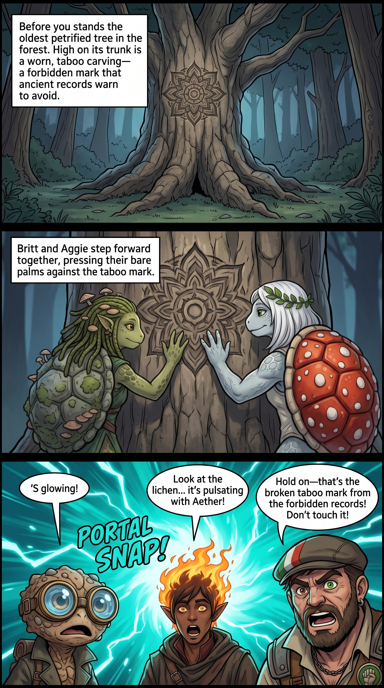
The Forbidden Taboo Mark (Present Day Frame)
Shows the quiet dusk forest where Squad 907 stands before an ancient petrified oak tree carrying a worn, taboo five-pointed mandala mark carved into its trunk.
- Narration Box (Top Left):** `"Before you stands the oldest petrified tree in the forest. High on its trunk is a worn, taboo carving—a forbidden mark that ancient records warn to avoid."`
Show Art Generation Prompt
`Detailed 2D graphic novel style, clean expressive manga-style linework, crisp black ink outlines, cel-shaded color flats, cinematic volumetric lighting. Wide shot of dark twilight forest clearing in Center Grove. Colossal petrified oak tree with dark-grey bark. On trunk is a worn carving of a broken five-pointed mandala mark, illuminated by glowing violet lichen. Five travelers stand in clearing looking up at tree in caution. Deep turquoise dusk shadows, soft mist. Black gutters.`
Two turtle-mushroom hybrid cousins, Britt and Aggie, step forward together and cautiously touch their bare palms to the forbidden mark on the trunk, triggering a sudden flare of teal light.
- Narration Box (Top Left):** `"Britt and Aggie step forward together, pressing their bare palms against the taboo mark."`
Show Art Generation Prompt
`Detailed 2D graphic novel style, clean expressive manga-style linework, crisp black ink outlines, cel-shaded color flats, cinematic volumetric lighting. Medium close-up shot. [turtle-mushroom hybrid female of Mizizi clan, olivaceous green turtle skin, long root dreadlocks, dark grey tunic, lumpy turtle shell] and [turtle-mushroom hybrid female of Mizizi clan, light grey turtle skin, white hair with leaf crown, white linen dress, red-and-white spotted mushroom shell] step forward together, pressing bare palms against carved five-pointed mandala mark on rough oak bark. Glowing violet lichen erupts into bright teal light around their hands. Black gutters.`
The tree unleashes a blinding vortex of teal portal energy. In an inset panel, Iggy, Ignatious, and Loami freeze in shock as Loami warns that the mark is forbidden.
Show Art Generation Prompt
`Detailed 2D graphic novel style, clean expressive manga-style linework, crisp black ink outlines, cel-shaded color flats, cinematic volumetric lighting. Dynamic splash background showing blinding vortex of teal energy engulfing forest. Inset rectangular panel showing [small clay-and-soil-kin, packed dirt brown skin, moss sprouts, copper goggles, trench coat, NO SHELL], [young male, dark brown skin, literal burning orange flame crown hair, glowing orange eyes], and [rugged male, brown flat cap with Italian ribbon, grease smudges] standing frozen in awe. Speech bubble from small clay creature: "'S glowing!" Speech bubble from flaming-hair male: "Look at the lichen... it's pulsating with Aether!" Speech bubble from flat-cap male: "Hold on—that's the broken taboo mark from the forbidden records! Don't touch it!" Sound effect in bold teal lightning font across panel border: "⚡ PORTAL SNAP!" Black gutters.`
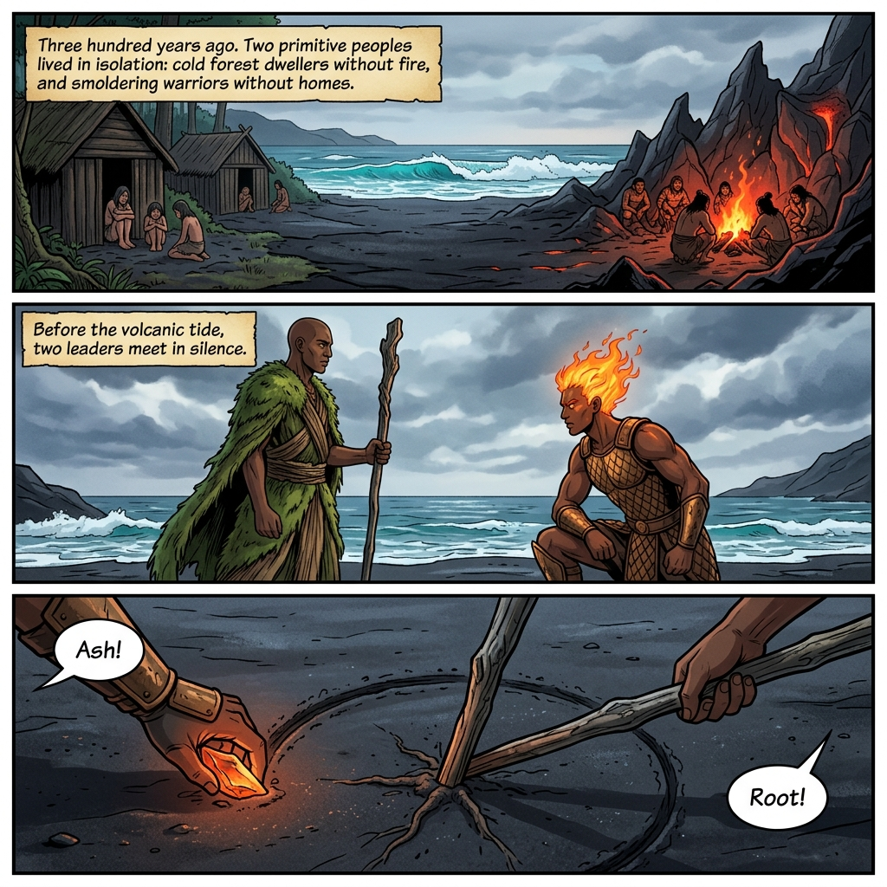
The Shoreline of Fire & Root (Act I — The First Union)
A split view of a black volcanic beach: cold forest dwellers huddling in damp wooden huts on the left, and smoldering warriors huddled around lava vents on the right.
- Narration Box (Top Left):** `"Three hundred years ago. Two primitive peoples lived in isolation: cold forest dwellers without fire, and smoldering warriors without homes."`
Show Art Generation Prompt
`Detailed 2D graphic novel style, clean expressive manga-style linework, crisp black ink outlines, cel-shaded color flats, cinematic volumetric lighting. Wide panoramic splash panel of jet-black volcanic sand beach. On left, damp rainforest with barefoot primitive people shivering in cold dark wooden huts. On right, volcanic magma crags with warriors huddling around roaring lava vents. Turquoise ocean waves crashing in middle. Black gutters.`
Mwangi, leader of the forest dwellers, meets Brakkan, leader of the volcanic warriors, on the neutral black sand beach.
- Narration Box (Top Left):** `"Before the volcanic tide, two leaders meet in silence."`
Show Art Generation Prompt
`Detailed 2D graphic novel style, clean expressive manga-style linework, crisp black ink outlines, cel-shaded color flats, cinematic volumetric lighting. Medium shot on black volcanic sand shore. On left stands [tall regal male, dark clay-brown skin, draped in living green moss robes, holding petrified ironbark staff, calm brown eyes]. On right kneels [athletic warrior male, dark brown skin, beaten bronze scale armor, hair crowning with natural orange flames, smoldering ember eyes]. They face each other across wet black sand. Black gutters.`
Hands carve the first two strokes of the Master Glyph into the wet black sand—a volcanic glass fire arc intersected by an ironbark root line.
Show Art Generation Prompt
`Detailed 2D graphic novel style, clean expressive manga-style linework, crisp black ink outlines, cel-shaded color flats, cinematic volumetric lighting. Close-up ground shot of wet jet-black volcanic sand. A glowing fragment of volcanic glass held by a bronze-gloved hand draws a curved fire arc in the sand. A petrified ironbark staff held by dark clay-brown hand strikes straight through the arc, carving a root-line. Narration box top center: "A Connection was born." Black gutters.`
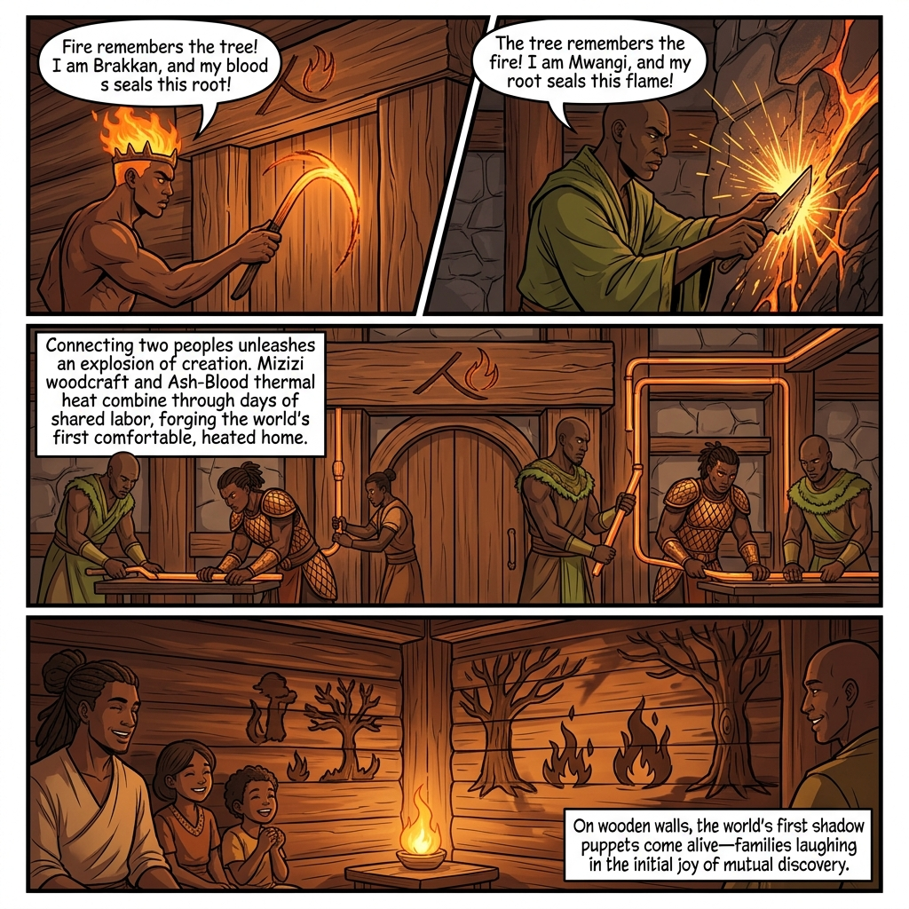
The Cultural Spark (Act I — Fire & Tree Carvings)
Shows the Mizizi carving the Root line into an oak threshold in the forest, while the Ash-Blood sear the Fire arc into a volcanic magma wall.
Show Art Generation Prompt
`Detailed 2D graphic novel style, clean expressive manga-style linework, crisp black ink outlines, cel-shaded color flats, cinematic volumetric lighting. Split vertical panel. Left half: [tall regal male, dark clay-brown skin, moss robes] carving a straight root mark into an oak door mantle in damp forest. Right half: [athletic warrior male, dark brown skin, flaming orange hair crown] searing a glowing orange fire arc into a molten magma wall. Speech bubble left: "The tree remembers the fire!" Speech bubble right: "The fire remembers the tree!" Black gutters.`
Mizizi wood-weavers and Ash-Blood smiths work side-by-side fitting thermal bronze pipes into ironbark timber frames, carving the combined 2-stroke mark above the main doorway.
Show Art Generation Prompt
`Detailed 2D graphic novel style, clean expressive manga-style linework, crisp black ink outlines, cel-shaded color flats, cinematic volumetric lighting. Wide construction montage panel. Mizizi craftsmen [tall figures, dark clay-brown skin, moss trim] and Ash-Blood smiths [athletic figures, dark brown skin, bronze scale armor, ember eyes] work side-by-side, fitting glowing thermal bronze pipes into polished ironbark timber frames. Above main wooden door arch, the two-stroke mark (Root line cutting Fire arc) is deeply chiseled into wooden mantle. Narration box top left: "Connecting two peoples unleashes an explosion of creation. Mizizi woodcraft and Ash-Blood thermal heat combine, forging the world's first comfortable, heated home." Black gutters.`
Inside a cozy heated timber room, a core-fire lamp projects shadow puppets of trees and flames onto the wooden wall while families laugh together.
Show Art Generation Prompt
`Detailed 2D graphic novel style, clean expressive manga-style linework, crisp black ink outlines, cel-shaded color flats, cinematic volumetric lighting. Medium shot inside warm wooden room built of dark polished ironbark logs. Warm amber light from a core-fire lamp casts detailed shadow-puppets across wooden wall—carved bark cutouts depicting trees and jumping flames. Clan families watch happily. Narration box bottom right: "On wooden walls, the world's first shadow puppets come alive—families laughing in the initial joy of mutual discovery." Black gutters.`
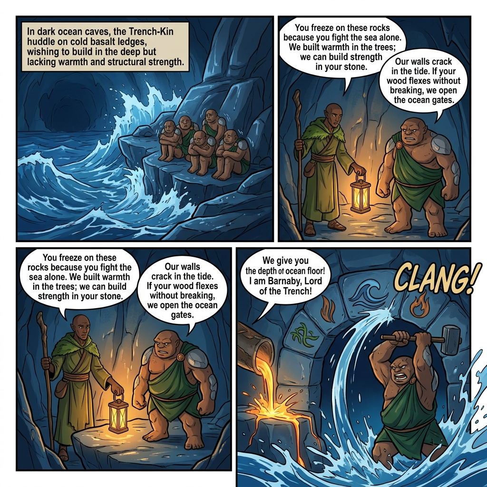
Binding of the Deep (Act II — Trench-Kin Cavern)
Trench-Kin clay-and-stone humanoids in seaweed togas huddle shivering on basalt cave ledges above crashing waves.
Show Art Generation Prompt
`Detailed 2D graphic novel style, clean expressive manga-style linework, crisp black ink outlines, cel-shaded color flats, cinematic volumetric lighting. Wide shot of dark ocean surface cavern. Crashing blue ocean waves against giant basalt stone ledges. Subterranean Trench-Kin [stocky heavy-set clay-and-stone-kin humanoids, packed dirt brown skin, smooth grey basalt stone shoulder accents, wearing close-fitting dark green seaweed togas fastened with copper brooches] huddle shivering on wet rocks. Narration box top left: "In dark ocean caves, the Trench-Kin huddle on cold basalt ledges, wishing to build in the deep but lacking warmth and structural strength." Black gutters.`
Mwangi brings a glowing thermal lantern to Barnaby, offering woodcraft flexibility for stone strength.
Show Art Generation Prompt
`Detailed 2D graphic novel style, clean expressive manga-style linework, crisp black ink outlines, cel-shaded color flats, cinematic volumetric lighting. Medium shot on wet stone ledge inside ocean cave. [tall male, dark clay-brown skin, green moss robes, holding ironbark staff] sets down a glowing thermal timber lamp next to [stocky clay-and-stone-kin leader, packed dirt brown skin, smooth grey basalt shoulder accents, close-fitting seaweed toga]. Warm amber lantern light reflects off wet basalt walls. Speech bubble from moss leader: "You freeze on these rocks because you fight the sea alone. We built warmth in the trees; we can build strength in your stone." Speech bubble from Trench leader: "Our walls crack in the tide. If your wood flexes without breaking, we open the ocean gates." Black gutters.`
Barnaby strikes the third stroke—an ocean wave curve—into the basalt arch keystone alongside Root and Fire marks.
Show Art Generation Prompt
`Detailed 2D graphic novel style, clean expressive manga-style linework, crisp black ink outlines, cel-shaded color flats, cinematic volumetric lighting. Dynamic action splash panel at submerged basalt archway. Glowing root-resin and molten bronze pour into lead pressure seal. [stocky clay-and-stone-kin leader, packed dirt brown skin, seaweed toga] swings heavy iron mallet, striking the 3rd stroke—an ocean wave curve—into the basalt keystone alongside existing Root and Fire marks. Water spray flying. Speech bubble from Trench leader: "We give you the depth of the ocean floor! I am Barnaby, Lord of the Trench!" Sound effect across panel border: "CLANG!" Black gutters.`
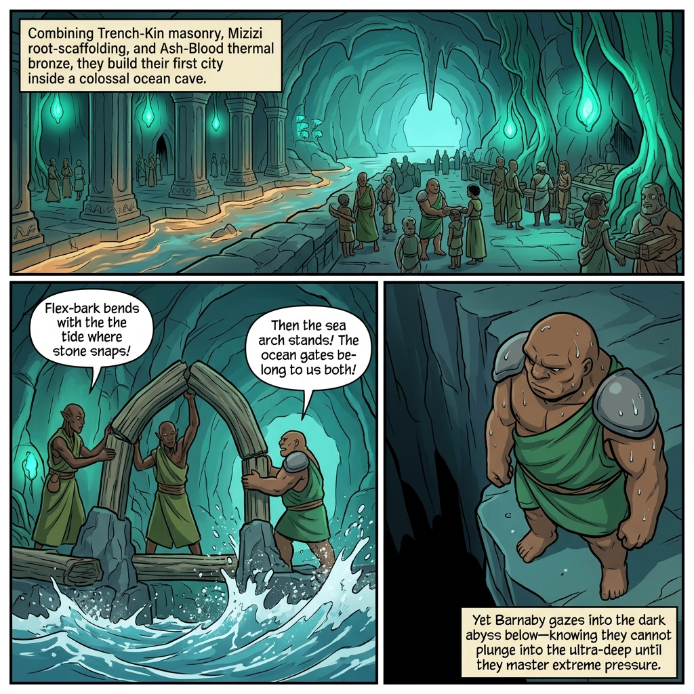
Ocean Cavern City & The Abyssal Gaze (Act II — Deep City)
A subterranean ocean cave metropolis lit by teal root-lamps and thermal water channels.
Show Art Generation Prompt
`Detailed 2D graphic novel style, clean expressive manga-style linework, crisp black ink outlines, cel-shaded color flats, cinematic volumetric lighting. Panoramic wide view inside giant ocean surface cavern. Warm thermal water channels flow past carved basalt colonnades. Bioluminescent teal root-lamps illuminate stone walkways filled with citizens trading thermal timber and ocean stone. Narration box top left: "Combining Trench-Kin masonry, Mizizi root-scaffolding, and Ash-Blood thermal bronze, they build their first city inside a colossal ocean cave." Black gutters.`
Mizizi builders and Trench masons in seaweed togas fit flexible ironbark beams into a massive sea archway as waves crash below.
Show Art Generation Prompt
`Detailed 2D graphic novel style, clean expressive manga-style linework, crisp black ink outlines, cel-shaded color flats, cinematic volumetric lighting. Medium shot inside ocean cavern. Mizizi craftsmen [tall figures, dark clay-brown skin, moss robes] and Trench-Kin masons [stocky clay-and-stone-kin humanoids, seaweed togas, basalt shoulder accents] fit flexible petrified ironbark beams into a massive basalt archway as waves crash below. Water spray glistening. Speech bubble from Mizizi builder: "Flex-bark bends with the tide where stone snaps!" Speech bubble from Trench mason: "Then the sea arch stands! The ocean gates belong to us both!" Black gutters.`
Barnaby stands at a cave ledge, gazing down into the pitch-black ocean chasm below.
Show Art Generation Prompt
`Detailed 2D graphic novel style, clean expressive manga-style linework, crisp black ink outlines, cel-shaded color flats, cinematic volumetric lighting. Medium close-up shot of [stocky clay-and-stone-kin leader, packed dirt brown skin, smooth grey basalt shoulder accents, close-fitting seaweed toga] standing at edge of basalt ledge. He gazes down into pitch-black oceanic abyssal chasm below. Water droplets glisten on his skin. Narration box bottom right: "Yet Barnaby gazes into the dark abyss below—knowing they cannot plunge into the ultra-deep until they master extreme pressure." Black gutters.`
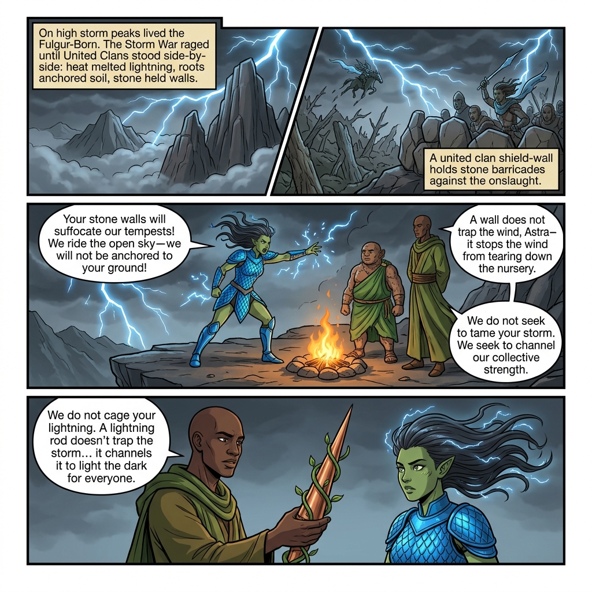
Storm War & The Campfire Truce (Act III — Mountain Peaks)
High mountain peaks where the Storm War raged until the united clan shield-wall held the line.
Show Art Generation Prompt
`Detailed 2D graphic novel style, clean expressive manga-style linework, crisp black ink outlines, cel-shaded color flats, cinematic volumetric lighting. Wide split action panel. High mountain basalt peaks above storm clouds. Lightning arcing across dark sky. Memory of wild tempest riders throwing electric bolts down on petrified forest while united clan shield-wall holds stone barricades. Narration box top left: "On high storm peaks lived the Fulgur-Born. The Storm War raged until United Clans stood side-by-side: heat melted lightning, roots anchored soil, stone held walls." Black gutters.`
Astra of the Fulgur pushes back at a midnight campfire, fiercely rejecting stone walls that trap the wind.
Show Art Generation Prompt
`Detailed 2D graphic novel style, clean expressive manga-style linework, crisp black ink outlines, cel-shaded color flats, cinematic volumetric lighting. Medium shot around flickering basalt campfire hearth on stormy cliff ledge. [athletic warrior female, olivaceous green skin, electric blue scale armor, dark hair floating in static coils] stands before [stocky clay-and-stone-kin leader in seaweed toga] and [tall male, moss robes], gesturing fiercely toward tempest sky as static blue sparks arc from her hands. Speech bubble from Fulgur leader: "Your stone walls will suffocate our tempests! We ride the open sky—we will not be anchored to your ground!" Speech bubble from Trench leader: "A wall does not trap the wind, Astra—it stops the wind from tearing down the nursery." Speech bubble from Ash-Blood leader: "We do not seek to tame your storm. We seek to channel our collective strength." Black gutters.`
Mwangi presents a vine-wrapped copper spire, explaining that a lightning rod channels the storm to light the dark for everyone.
Show Art Generation Prompt
`Detailed 2D graphic novel style, clean expressive manga-style linework, crisp black ink outlines, cel-shaded color flats, cinematic volumetric lighting. Close-up panel. [tall male, dark clay-brown skin, moss robes] holds out a polished copper spire wrapped in living green vine. [athletic warrior female, olivaceous green skin, dark hair floating in static coils] stares at spire as static around her hair calms into gentle hum. Speech bubble from Mizizi leader: "We do not cage your lightning. A lightning rod doesn't trap the storm... it channels it to light the dark for everyone." Black gutters.`
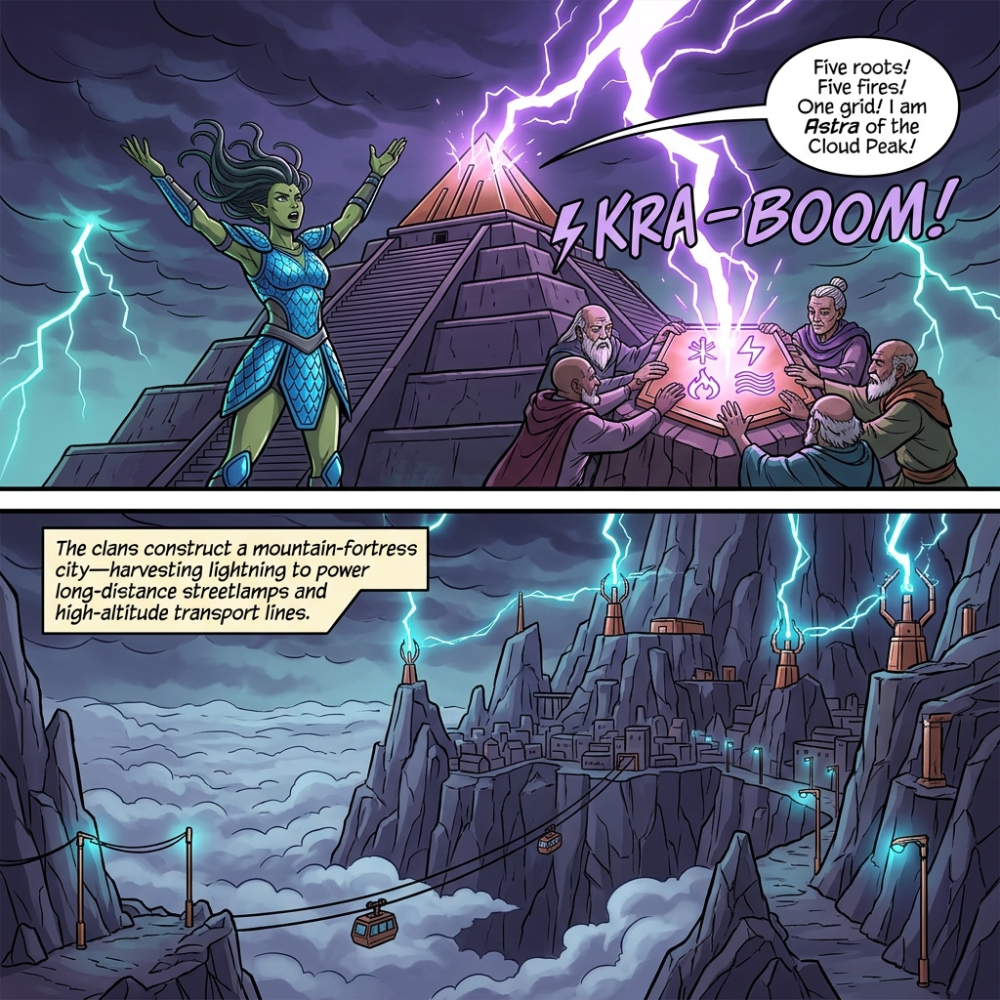
Step-Pyramid & Mountain Fortress (Act III — Lightning City)
Astra raises her arms as a massive lightning bolt strikes a 50-foot copper capstone atop a basalt step-pyramid, fusing the 4-stroke mark (Root, Fire, Wave, Lightning) into the plate.
Show Art Generation Prompt
`Detailed 2D graphic novel style, clean expressive manga-style linework, crisp black ink outlines, cel-shaded color flats, cinematic volumetric lighting. Full page splash panel atop a colossal basalt step-pyramid. [athletic warrior female, olivaceous green skin, electric blue scale armor, dark hair floating in static coils] raises her arms into tempest sky. A massive violet lightning bolt strikes a 50-foot copper capstone, fusing four metal bars into the 4-stroke mark (Root, Fire, Wave, Lightning). Five elders touch glowing metal plate together. Speech bubble from Fulgur leader: "Five roots! Five fires! One grid! I am Astra of the Cloud Peak!" Sound effect in bold lightning font: "⚡ KRA-BOOM!" Black gutters.`
A mountain-fortress city carved into cliff faces above storm clouds, lit by static-conduit streetlamps in cool blue and violet tones.
Show Art Generation Prompt
`Detailed 2D graphic novel style, clean expressive manga-style linework, crisp black ink outlines, cel-shaded color flats, cinematic volumetric lighting. Wide landscape view of a colossal mountain-fortress city carved directly into jagged basalt cliff faces above storm clouds. High storm-copper lightning conductors glow with blue energy, illuminating cliffside stone homes and streetlamps in cool blue and violet light. Narration box top left: "The clans construct a mountain-fortress city—harvesting storm energy to light cliffside homes in cool, brilliant colors." Black gutters.`
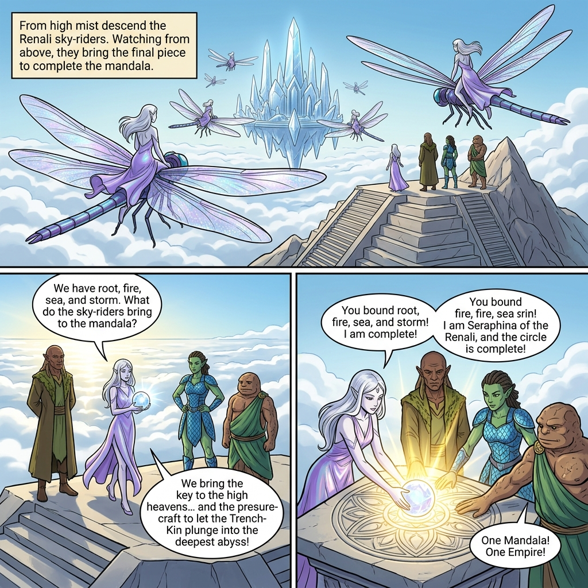
Renali Sky-Council & Arrival (Act IV — Renali Alliance)
Renali elders debate atop floating crystal spires, weighing the loss of absolute freedom against being left behind as the empire thrives below.
Show Art Generation Prompt
`Detailed 2D graphic novel style, clean expressive manga-style linework, crisp black ink outlines, cel-shaded color flats, cinematic volumetric lighting. Medium shot atop floating crystal spire platform above clouds. Renali elders [pale porcelain skin, silver-white hair, flowing purple gowns] inspect luxury goods brought up by traders—polished bronze lamps, glowing sea-silk, thermal timber. Speech bubble from Renali elder: "If we remain isolated in the mist, the world below will leave us behind..." Speech bubble from Seraphina: "We trade our total solitude for a place in the great mandala—and bring sky-craft to the deep!" Black gutters.`
Renali riders descend aboard giant biological dragonflies to meet the four clan leaders on the mountain pyramid.
Show Art Generation Prompt
`Detailed 2D graphic novel style, clean expressive manga-style linework, crisp black ink outlines, cel-shaded color flats, cinematic volumetric lighting. Wide shot above cloud line. A fleet of tall graceful Renali riders [pale porcelain skin, silver-white hair, flowing purple gowns, human body with NO wings on back] descends aboard colossal biological iridescent dragonfly mounts. Sky-rider leader dismounts before four clan elders on mountain pyramid landing pad. Narration box top left: "From high mist descend the Renali sky-riders, bringing the final piece to complete the mandala." Black gutters.`
Seraphina places a crystal pressure-sphere into the mandala plate on the altar, completing the 5-piece Master Glyph in stone as golden light flares.
Show Art Generation Prompt
`Detailed 2D graphic novel style, clean expressive manga-style linework, crisp black ink outlines, cel-shaded color flats, cinematic volumetric lighting. Medium close-up at central mandala altar. [graceful female, pale porcelain skin, silver-white hair, purple silk gown] places glowing crystal pressure-sphere into center of carved mandala plate, completing full five-piece Master Clan Glyph in stone as golden light flares. Five elders place hands upon altar together. Speech bubble from Seraphina: "I am Seraphina of the Renali, and the circle is complete!" Speech bubble from Elders: "One Mandala! One Empire!" Black gutters.`
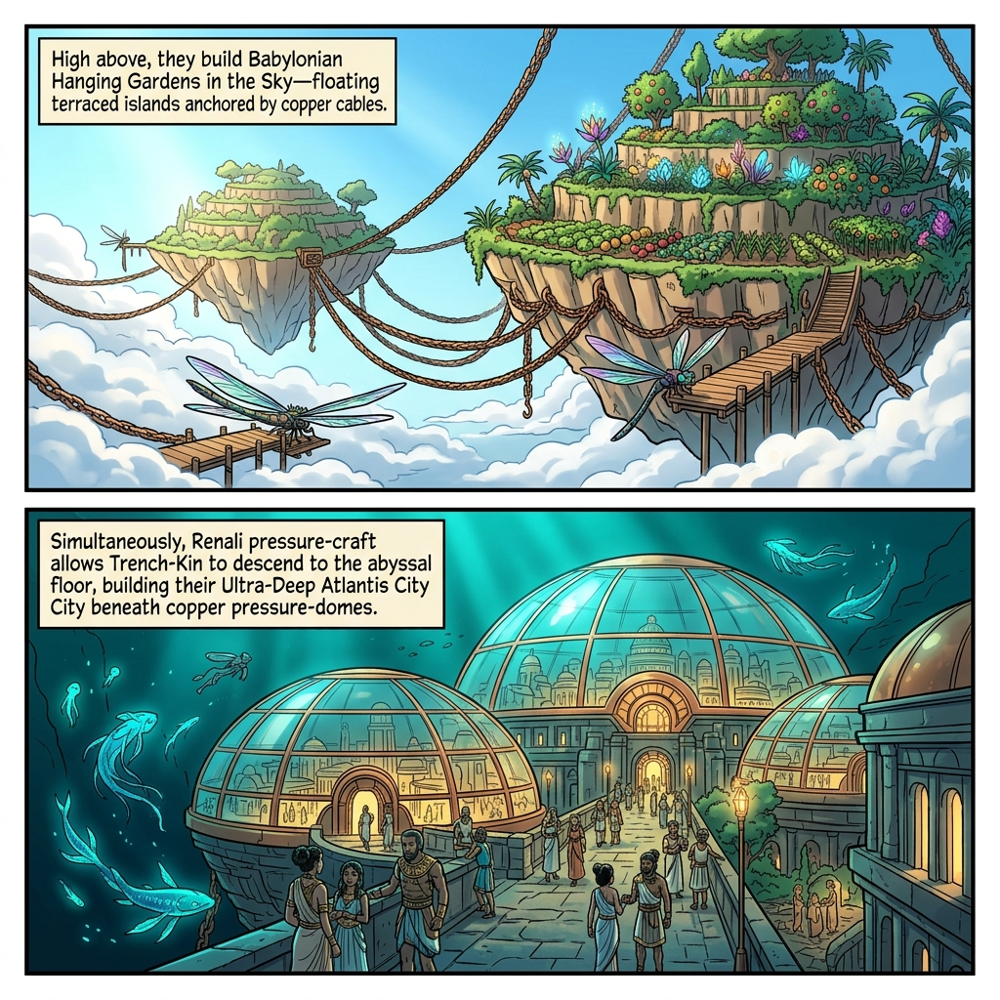
Dual Marvels — Sky Gardens & Deep Atlantis (Act IV — Peak Wonders)
Terraced sanctuary gardens floating in the azure sky anchored by heavy copper cables, where dragonfly mounts dock at wooden piers.
Show Art Generation Prompt
`Detailed 2D graphic novel style, clean expressive manga-style linework, crisp black ink outlines, cel-shaded color flats, cinematic volumetric lighting. Wide horizontal shot of Hanging Gardens in the Sky. Floating terraced sanctuary islands suspended in azure sky above clouds, anchored by heavy copper suspension cables, producing sweet fruits, glowing flowers, and crops. Dragonfly mounts dock at floating wooden piers. Narration box top left: "High above, they build Hanging Gardens in the Sky—floating terraced islands anchored by copper cables." Black gutters.`
Deep ocean floor metropolis where citizens walk through basalt avenues beneath glowing copper and glass pressure-domes underwater.
Show Art Generation Prompt
`Detailed 2D graphic novel style, clean expressive manga-style linework, crisp black ink outlines, cel-shaded color flats, cinematic volumetric lighting. Wide horizontal shot of Ultra-Deep Atlantis City on ocean floor. Citizens walk through dry basalt stone avenues beneath giant glowing copper and glass pressure-domes underwater. Bioluminescent teal sea creatures swim outside domes. Narration box top left: "As the Mandala Clans synergized even more, great marvels were unlocked—including Ultra-Deep Atlantis cities beneath copper pressure-domes." Black gutters.`
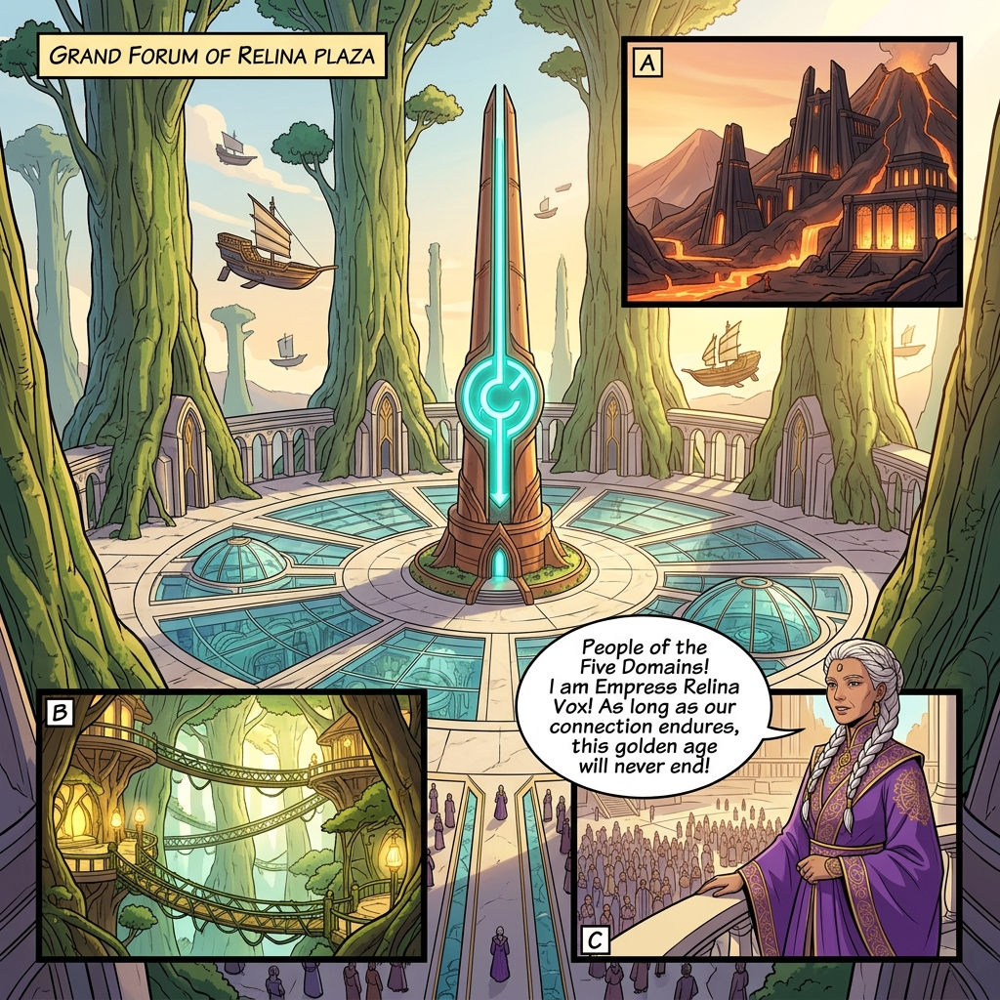
Golden Apex Era (Act V — Relina Era)
Grand Forum of Relina with marble plaza, petrified oak towers, firefly-powered sky-sleds, and Empress Relina Vox addressing citizens from a balcony.
Show Art Generation Prompt
`Detailed 2D graphic novel style, clean expressive manga-style linework, crisp black ink outlines, cel-shaded color flats, cinematic volumetric lighting. Full page epic splash panel of Grand Forum of Relina. Colossal marble plaza surrounded by living petrified oak towers, firefly-powered sky-sleds pulling light wooden transport cars, and underwater dome conduits. Central copper spire holds Master Clan Glyph glowing with bright unbroken teal light. Inset Panel A top right (Ash-Blood Domain): obsidian temples carved into volcanic slopes with thermal light rivers. Inset Panel B bottom left (Mizizi Domain): living oak canopy cities with glowing sap lamps. Inset Panel C bottom right (Forum Balcony): [stately royal woman, fair skin, silver braided hair, royal purple silk robes with gold mandala embroidery] addressing citizens from balcony. Speech bubble from Empress: "People of the Five Domains! As long as our connection endures, this golden age will never end!" Narration box top left: "For a time, there was prosperity." Black gutters.`
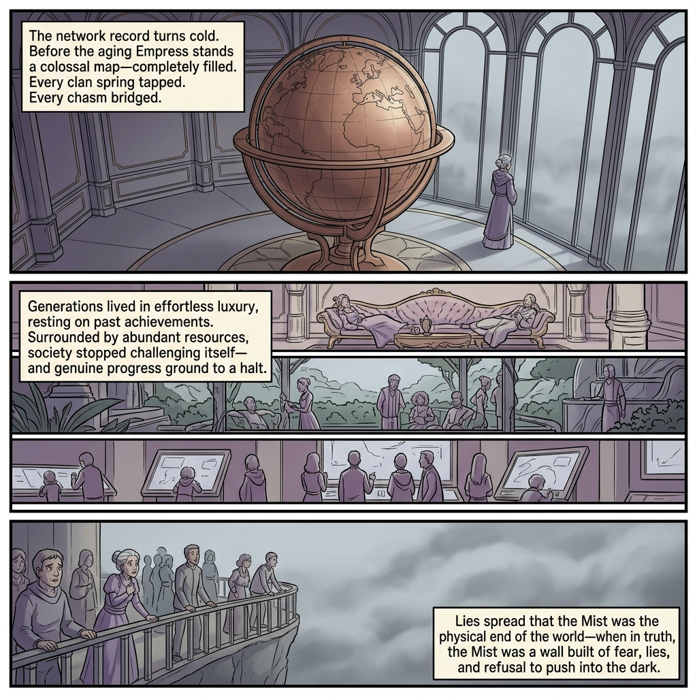
Ease of Bliss & The Stagnation Meeting (Act VI — Stagnation)
Inside an ornate observatory chamber with a colossal floor mosaic world map, the aging Empress looks out arched glass windows at a wall of thick grey mist.
Show Art Generation Prompt
`Detailed 2D graphic novel style, clean expressive manga-style linework, crisp black ink outlines, cel-shaded color flats, cinematic volumetric lighting. Wide high shot inside ornate observatory chamber. Floor is inlaid with a colossal copper-and-stone floor mosaic world map. [stately aging woman, silver hair, faded purple robes] stands quietly staring out floor-to-ceiling arched glass windows at endless wall of thick grey mist outside. Narration box top left: "Before the aging Empress lies a world map fully claimed—every spring tapped, every chasm bridged." Black gutters.`
A council meeting of generalized citizens—where clan boundaries have blurred—deciding that no further growth or exploration is needed.
Show Art Generation Prompt
`Detailed 2D graphic novel style, clean expressive manga-style linework, crisp black ink outlines, cel-shaded color flats, cinematic volumetric lighting. Medium shot around ornate marble table. Homogenized citizens of indistinct clan attire recline lazily on cushioned benches, gesturing indifferently toward map scrolls. Speech bubble from citizen: "Why push into the dark or challenge ourselves for more... when we have all we need right here?" Speech bubble from second citizen: "The world is complete. Growth is finished." Black gutters.`
Citizens look fearfully at the thick grey Mist on a balcony—a barrier born not of physical walls, but of fear, lies, and lack of desire to push into the dark.
Show Art Generation Prompt
`Detailed 2D graphic novel style, clean expressive manga-style linework, crisp black ink outlines, cel-shaded color flats, cinematic volumetric lighting. Medium shot on cliff balcony. Citizens stand looking fearfully at thick grey Mist. Mist is a barrier born of fear, lies, and lack of desire to push into the dark. Narration box bottom right: "Lies spread that the Mist was the physical end of the world—when in truth, the Mist was a wall built of fear, lies, and refusal to push into the dark." Black gutters.`
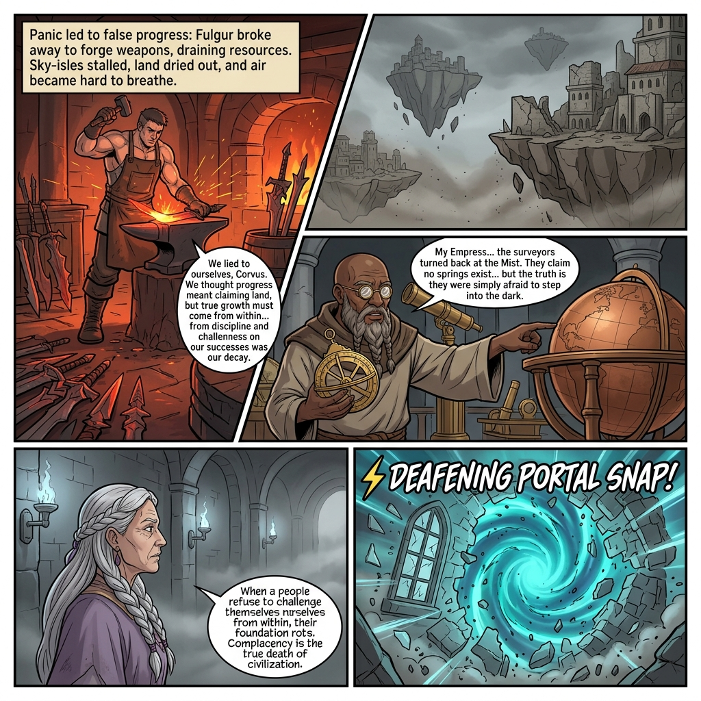
Breakdown Timeline & The Fall (Act VI — Collapse)
A Trench-Kin deep sea pressure-dome habitat cracks under pressure override as sea water bursts through stone joints.
Show Art Generation Prompt
`Detailed 2D graphic novel style, clean expressive manga-style linework, crisp black ink outlines, cel-shaded color flats, cinematic volumetric lighting. Medium wide shot inside underwater stone habitat. Massive stress cracks fracture glass and copper pressure dome; high-pressure sea water sprays violently through broken basalt arch joints. Citizens panic. Narration box top left: "As time went on the paradise was taken for granted. No growth. No new connections, and before the clans knew it, things started breaking." Black gutters.`
A Renali dragonfly mount struggles in mid-air and falls under the excessive weight of luxury cargo and passengers.
Show Art Generation Prompt
`Detailed 2D graphic novel style, clean expressive manga-style linework, crisp black ink outlines, cel-shaded color flats, cinematic volumetric lighting. Medium shot in sky above clouds. A giant biological dragonfly mount buckles in mid-air, translucent wings straining and tearing under heavy over-stacked luxury cargo chests and multiple passengers, plunging toward cloud layer below. Black gutters.`
A high mountain ziggurat conductor explodes in sparks during a storm instead of redirecting lightning safely into light.
Show Art Generation Prompt
`Detailed 2D graphic novel style, clean expressive manga-style linework, crisp black ink outlines, cel-shaded color flats, cinematic volumetric lighting. Dynamic wide action shot of mountain basalt step-pyramid. A massive lightning bolt strikes unmaintained copper conductor, violently exploding top stone ziggurat in a blast of fiery sparks and flying masonry instead of redirecting power safely. Narration box bottom right: "Theories were abundant, but one thing was clear: the time of abundance was over—and to survive, change was needed." Black gutters.`
The grey fog observatory shatters like glass into a high-energy teal portal energy vortex.
Show Art Generation Prompt
`Detailed 2D graphic novel style, clean expressive manga-style linework, crisp black ink outlines, cel-shaded color flats, cinematic volumetric lighting. High-energy explosion panel. The grey fog observatory shatters like glass into swirling high-frequency acoustic teal portal energy vortex. Sound effect across panel border: "⚡ DEAFENING PORTAL SNAP!" Black gutters.`
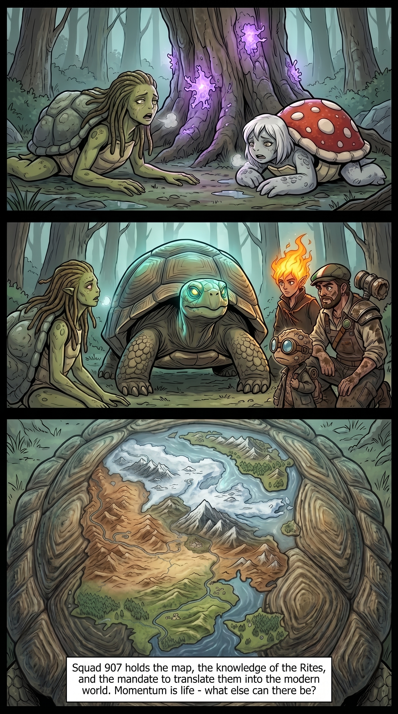
Present Return & Tortoise Shell Map (Epilogue)
Britt and Aggie gasp back into their bodies, lying on the forest ground in Center Grove as the ancient lichen on the oak tree fades to stone.
Show Art Generation Prompt
`Detailed 2D graphic novel style, clean expressive manga-style linework, crisp black ink outlines, cel-shaded color flats, cinematic volumetric lighting. Medium shot in Center Grove dusk. [turtle-mushroom hybrid female of Mizizi clan, olivaceous green turtle skin, long root dreadlocks, dark grey tunic, lumpy turtle shell] and [turtle-mushroom hybrid female of Mizizi clan, light grey turtle skin, white hair with leaf crown, white linen dress, red-and-white spotted mushroom shell] lie on damp forest floor, gasping back into their bodies as glowing violet lichen on petrified oak fades back to quiet stone. Black gutters.`
Sitting on the ground between Britt and Aggie is a colossal ancient tortoise with glowing golden-teal eyes, while Iggy, Ignatious, and Loami watch in awe.
Show Art Generation Prompt
`Detailed 2D graphic novel style, clean expressive manga-style linework, crisp black ink outlines, cel-shaded color flats, cinematic volumetric lighting. Medium shot on forest ground. Sitting between Britt and Aggie is a colossal ancient tortoise with glowing golden-teal eyes. Standing behind them, [small clay-and-soil-kin, moss head sprouts, copper goggles, trench coat, NO SHELL], [young male, dark brown skin, flaming orange hair crown], and [rugged male, brown flat cap with Italian ribbon] watch frozen in awe. Black gutters.`
A full page splash showing a close-up of the ancient tortoise's back shell—depicting an ethereal glowing map of an unknown fantasy land with several distinct pinpricks of light across its shell segments.
Show Art Generation Prompt
`Detailed 2D graphic novel style, clean expressive manga-style linework, crisp black ink outlines, cel-shaded color flats, cinematic volumetric lighting. Full page close-up splash of ancient tortoise shell. Shell segments display an ethereal glowing golden-teal map of an unknown fantasy wilderness (Vumbua realm, NOT Earth) with several distinct pinpricks of light scattered across landmasses. Narration box bottom center: "Squad 907 holds the map, the words of the ancestral rites, and the mandate to begin the active, ongoing work of growth." Black gutters.`